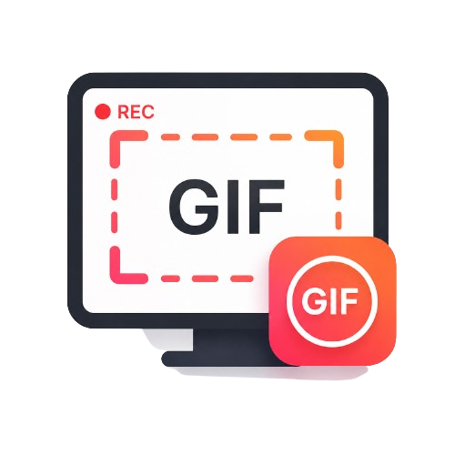

DOWNLOADS
사용할 프로그램을 선택하세요.
화면을 녹화하고 원하는 장면을 간편하게 GIF로 만들어 보세요.
동영상에서 필요한 구간만 빠르고 정확하게 잘라내세요.
키보드와 마우스 동작을 안전하게 기록하고 반복 실행하세요.
포맷 전 파일과 설치 앱 목록을 USB에 백업하고 포맷 후 그대로 복원하세요.
휴대폰 테더링 회선만 사용하도록 격리된 전용 브라우저입니다.